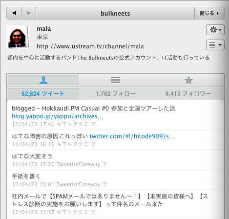
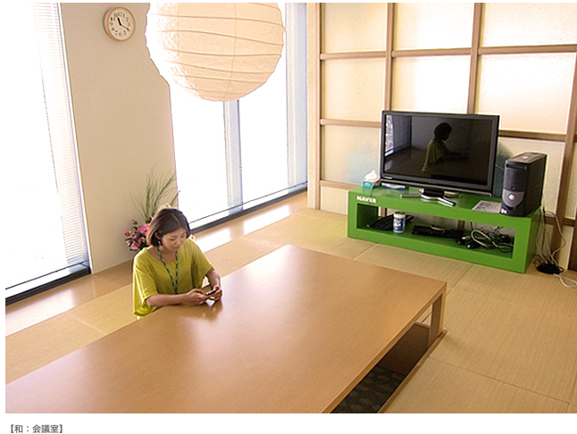

@開発部のミーティング
経営統合でライブドア株式会社という名前が無くなって久しいですが、 Open & Share 続行っていう噂らしいので、僕が今までやって来た Open & Share についてまとめてみました。
この資料を外に公開するという事と、どの業務やってる人にも参考になるのを考えてたらこうなった。
(このスライドだけは全編 Twitter で実況可能です)
開発1室
まずは、過去の事例を紹介してから具体的な技術について解説します。
Twitter で「 CodeRepos の記事寄稿したい！」って言ったら実現しました。
個人プロダクトだし、他者との契約もないので全ての部分を自分の裁量で Open & Share できました。
一度実績が出来たと言う事で「また何かやらない？」と言われたので、主要言語のモダン入門特集を企画してみた。
言語自体の記事は勤務先の業務を影響及ぼす事は少ないので自分の裁量で書けますね。
ただし、複数言語に精通した記事を一人で書くのは無理なので、複数の人に協力をおねがいした。
大人な事情がくんずほぐれつで始まったが、最終的に自分が主導権握った。
この連載のテーマは「Ficia の肝である大量の写真をサクサク表示する方法」を詳しく解説してるという、一見すると機密情報を晒してるようにみえる。
僕の場合は下っ端なので、開催情報を嗅ぎ付けたら「呼んで下さい！」ってお願いして呼んでもらってる。
主催者の方が呼んでくれる気になったら、 JPA との交渉をしてもらうので、領収書を握りしめて最大限捗る話をして牧さんの所まで領収書をもってけばミッション終了。
逆に「来て下さい！」って lovecall されてるのに返事しない mala みたいな人もいる。
これらの事例を踏まえて、なるべく安全に Open & Share する技術を紹介します。
おーぷんあんどしぇあーするためにも、おーぷんするものをかんがえよう！
そんなの好き勝手にだせばいいじゃん誰も困らないし。「ぼくのとっておきのぷろだくとだからだせないよ！」？だれも気にしてないからだせばいいよ。
なんでも間でも出す、なんでもかんでも出さない。は愚か者。例えば「フォントの横幅を考慮して、この横幅を越えそうだったら"..."を末尾につけて切り詰める JavaScript ライブラリ」とかそういうのは、ソースコードだしても誰も困らないしむしろ嬉しい人多いから出すべき。
ただ「勤怠システム自動化ツール」とか「NAVERまとめぶっこ抜きツール」とか、他社がからんでたり自社や関係会社からんでるのは微妙すぎて出したら怒られる。「ロケタッチ OpenAPI つかったツール」みたいのは公開情報だから問題なし。
※だめな事はJK的に考えて書くのおかしいから書いてない
みんなが良くやってる事としては、仕事に使いそうな道具を予め一般化したコードとして外出ししておいてから、いざ使う時に自社プロダクトに導入という手順を踏むと線引きしやすくて良いですね。 ikachan とかもこの手法で社内ツールとして投入しました。
こいう形で「どっから何処までか公開ツール」って事が明らかになってると、他の人が Open & Share する時に ikachan 連携の話が出しやすくて、 Open & Share が捗るのでおススメですね。
無理に一人で抱え込まない、一人で厳しそうだった周りを頼るの重要。
と色々あるので、勝手にやればいいです。恥ずかしくて出来ないとか思ってる人に言っとくと、どうせ誰もあなたの事見てないのできにしなくて良いです。 Share の積み重ねをして行く事が Open & Share の基礎技術です。
社員なら キモト API が使えるので、即座に8000人に向けて Open & Share ができるので超おすすめ。

ソーシャルメディアの炎上って恐いですよね。もしバラされたく無い事を Share されてしまった時にダメージを無くすソーシャルハックとしては「木を森の中に隠す」ですが、一人のアカウントでそれをやってもしょうがないので多数の人が森になると、K本さんが混乱する事象が発生して困らなくなるという事例が報告されています。
さいきんうちのチームで、位置情報系の周辺技術が捗る社内向け API の整備とかしたので、もし社内の他の所で使いたい人がいたら捗るのでそれを社内 wiki 見ながら説明します。
これも外出ししてもあんま困らないだろうけど、インパクト凄いのあるから別資料で。
あともう一個発表があって
カヤックがイノベーションハッカソンってのをはじめた記事を見た時に、 sugyan が社内ハッカソンやりたがってたのを思い出したのでやる事にしました。
単なる業務になったら意味ないんで、制約つけます。
※社外の人が参加したい！言ってきても支障が起きない鉄の掟です
和 会議室 (外部の人入れないらしいので、外部参加希望者受け入れる時はカフェでやりましょ)

弊社では Open & Share するエンジニアを募集しています。
ということで、あとで github に、この資料あげときますー
Use a spacebar or arrow keys to navigate